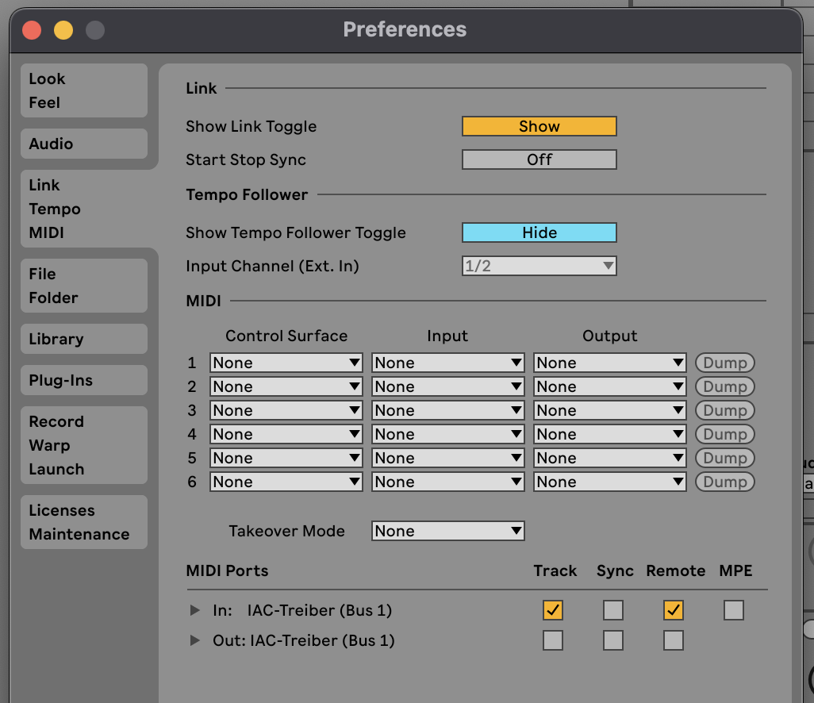

🎯 Features
Real-time Hand Tracking
AI-powered computer vision using MediaPipe for accurate hand detection with minimal latency.
4 MIDI CC Outputs
Map left/right hand X/Y positions to any DAW parameter. Full control over your music.
Flexible MIDI Mapping
Assign any CC number per parameter. Mute/Solo controls to focus on specific parameters.
Customizable Visualization
Toggle video feed, keypoints, skeleton, and control zones. Preferences saved per session.
Easy Setup
Works with Ableton Live, FL Studio, Logic Pro and more. Simple IAC Driver configuration.
Automatic Updates
Get notified when new versions are available. Always stay up to date.
🚀 Quick Start Guide
1. Installation
- Download Motion2MIDI from the link above
- Unzip the downloaded file
- Copy plugins to your plugin folder:
- AU:
~/Library/Audio/Plug-Ins/Components/Motion2MIDI.component - VST3:
~/Library/Audio/Plug-Ins/VST3/Motion2MIDI.vst3
- AU:
- Restart your DAW
2. Setup IAC Driver (macOS)
The IAC Driver creates a virtual MIDI bus for routing MIDI between applications.
- Open Audio MIDI Setup (Applications → Utilities)
- Go to Window → Show MIDI Studio (or press ⌘2)
- Double-click the IAC Driver icon
- Check "Device is online"
3. DAW Setup
Enable the IAC Driver for MIDI input/output in your DAW's settings.
Ableton Live:
- Go to Preferences → Link, Tempo & MIDI
- Under MIDI Ports, enable:
- Track (for IAC Driver) ✓
- Remote (for IAC Driver) ✓

FL Studio:
- Go to Options → MIDI Settings
- Enable the IAC Driver in the input list
- Set "Enable" to ON
4. Load Motion2MIDI
- Load Motion2MIDI as an instrument/effect in your DAW
- Select MIDI output → Choose "IAC Driver Bus 1"
- Grant camera permission when prompted
5. MIDI Mapping
Motion2MIDI sends 4 MIDI CC parameters:
| Parameter | Default CC | Controls |
|---|---|---|
| LX | CC 11 | Left hand horizontal position |
| LY | CC 12 | Left hand vertical position |
| RX | CC 13 | Right hand horizontal position |
| RY | CC 14 | Right hand vertical position |
You can change the CC numbers using the MIDI CC selection dropdown.
🎛️ MIDI Mapping in Your DAW
Ableton Live
- Enable MIDI Map Mode: Press ⌘M (macOS) or Ctrl+M (Windows)
- Select the parameter you want to control (e.g., filter cutoff, volume)
- In Motion2MIDI: Click the Map button for the desired parameter (LX, LY, RX, or RY)
- The parameter will highlight and the mapping is established
- Exit MIDI Map Mode: Press ⌘M again
Note: Motion2MIDI automatically activates "No MIDI Signal Generation" during mapping to prevent unwanted parameter movements.
FL Studio
- In Motion2MIDI: Click the Map button for the desired parameter
- In FL Studio: Move the parameter you want to control
- Right-click the parameter → Link to controller
- The connection is established
Other DAWs
Most DAWs support standard MIDI Learn functionality:
- Activate MIDI Learn in your DAW
- Click the parameter you want to control
- Click the MAP button in Motion2MIDI
- Deactivate the MAP button before selecting the next parameter
💡 Tips & Best Practices
Camera Setup
- Lighting matters - Ensure your hands are well-lit for best tracking
- Camera angle - Position camera to capture your hands clearly
- Background - Avoid cluttered backgrounds for better detection
Control Zones
- Red dots show the tracked hand positions used for MIDI
- These control points are always visible and drive the MIDI output
Workflow Tips
- Solo mode - Use solo buttons to focus on one parameter at a time
- Mute - Temporarily disable a parameter without losing its mapping
- No Processing Mode - Stops MIDI output (useful during setup)
- Settings - Click the Settings button for visualization options
📋 System Requirements
- macOS 12.0 (Monterey) or later
- Webcam - Built-in or external USB camera
- DAW - Any DAW with MIDI mapping functionality
Tested DAWs
- ✅ Ableton Live 11
- ✅ FL Studio 21
❓ Frequently Asked Questions
The plugin doesn't appear in my DAW
- Make sure you copied it to the correct folder
- Restart your DAW completely
Camera permission denied
Go to System Settings → Privacy & Security → Camera and enable permission for your DAW.
MIDI output not working
- Activate the IAC Driver (see Setup section)
- In Motion2MIDI, select IAC Driver as MIDI output
- In your DAW, enable IAC Driver in MIDI settings
- Make sure the track receiving MIDI has "IAC Driver" as input
Tracking is inaccurate
- Improve lighting conditions
- Position camera to clearly see your hands
- Avoid cluttered backgrounds
- Ensure hands are not occluded
Note: Hand tracking accuracy is continuously being improved in future updates.
🔧 Support
For questions, issues, or feedback:
- GitHub Issues: Create an issue
- Email: contact@motion2midi.com
- Bug Reports: Report a Bug
- Feature Requests: Request a Feature
📄 License
Proprietary Software - Closed Source
This software requires acceptance of the End User License Agreement (EULA) before use. The EULA will be presented on first launch of the plugin.
Key Terms:All rights reserved.
- ✅ Free for beta testing
- ❌ No redistribution
- 🔹 Requires camera access (all processing is local)
✨ Acknowledgments
- Hand detection powered by MediaPipe
- Built with JUCE framework
- Computer vision by OpenCV
- Inference by ONNX Runtime